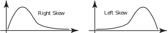
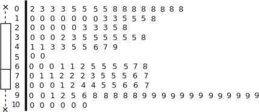
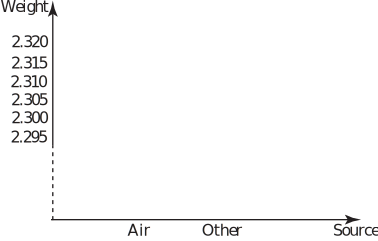
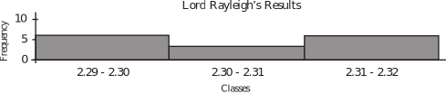
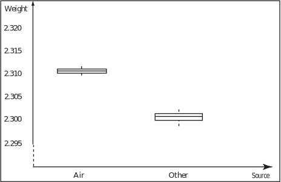

3 Skewness, gaps and multiple peaks
When exploring a data set, four properties worth looking for are outliers, skewness, gaps and multiple peaks. Outliers have been dealt with in some detail above so the comments given below briefly address skewness, gaps and multiple peaks.
3.1 Skewness
If a skewed distribution is represented purely by two numbers, say the mean and standard deviation, then the representation will be inadequate. Remember that the term ‘skewness’ refers to the location of the ‘tail’ of a distribution.

As an example, the data set below gives the current required to burn out a component under test.
| 9.5 | 11.9 | 20.0 | 33.4 | 40.1 | 50.0 | 12.7 | 21.0 | 33.6 | 40.6 |
| 50.0 | 15.5 | 26.4 | 35.4 | 41.1 | 50.0 | 17.7 | 37.9 | 41.3 | 50.0 |
| 41.9 | 50.4 | 43.0 | 43.3 | 43.6 | 43.7 | 43.8 | 44.7 | 44.9 | 45.0 |
| 45.1 | 45.2 | 45.3 | 46.1 | 46.5 | 46.6 | 47.1 | 48.0 | 48.2 | 45.3 |
| 48.5 | 48.4 | 48.6 | 48.7 | 48.8 | 48.9 | 49.4 | 49.5 | 49.6 | 49.8 |
The data were obtained by measuring the current in mA applied to an electronic component under conditions of destructive testing, gives the following values for the mean, standard deviation, median and mid-spread:
median and mid-spread
The values of and indicate that a lower average current with a greater spread will result in the destruction of the component than that indicated by the median and mid-spread. Clearly, further investigation is necessary to resolve this situation.
3.2 Gaps and multiple peaks
Distributions with gaps and multiple peaks can be very difficult to summarise easily. The stem-and-leaf and box-and-whisker plots shown below summarise some 1972 data concerning adult literacy. The leaves are single digit and the range of achievement reached in the field of literacy ranges from 2% to 100%.
Figure 15

The virtual lack of data between 50 and 60 indicates a gap and suggests that we are in fact dealing with two separate distributions which have the following properties:
- 2% - 50% literacy having right skew
- 60% - 100% literacy having left skew.
Notice that the term skewness refers to the tail of a distribution.
The usual summary statistics that you might be tempted to calculate are:
and or median and mid-spread
In this case, neither set of statistics is of much use since neither set indicates the gap or the skewness. Without visual representation, a single peaked distribution tends to be assumed, this is, of course, opposite to the truth in this case.
The stem-and-leaf plot is more informative than the box-and-whisker plot since it shows the gap.
In practice we would work with the two constituent distributions and attempt to relate the results in a practical way.
3.3 Final comments on data representations
- You should not rely on summary statistics such as the mean and standard deviation or median and mid-spread alone to represent a data set. Remember that if a distribution has outliers, gaps, skewness or multiple peaks, then shape is probably more important than location and spread.
- The shape of a distribution is better shown visually than numerically. Remember that a stem-and-leaf diagram retains the data and arranges the data in rank order and that a box-and-whisker plot emphasises the detail contained in the tails of a distribution.
Exercises
-
The following data give the lifetimes in hours of 50 electric lamps.
1337 1437 1214 1300 1124 1065 1470 1488 1103 978 1177 1289 1045 947 969 1339 1594 812 1277 1032 1167 974 1131 974 1727 1378 1385 1330 1672 1604 1493 1521 1235 1682 1136 1229 803 1166 1494 1733 978 1110 1055 1438 1436 1424 766 1283 829 1652 - Represent the data using a stem-and-leaf diagram with two-digit leaves.
- Calculate the mean lifetime from these data.
- Does the mean lifetime give a good indication of the expected lifetime of a lamp?
-
During the winter of 1893/94 Lord Rayleigh conducted an investigation into the density of nitrogen gas taken from various sources. He had previously found discrepancies between the density of nitrogen obtained by chemical decomposition and nitrogen obtained by removing oxygen from air. Lord Rayleigh’s investigations led to the discovery of argon. The raw data obtained during his investigations are given below.
Date Source Weight Date Source Weight 29/11/93 NO 2.30143 26/12/93 N 2 O 2.29889 05/12/93 NO 2.29816 28/12/93 N 2 O 2.29940 06/12/93 NO 2.30182 09/01/94 NH 4 NO 2 2.29849 08/12/93 NO 2.29890 13/01/94 NH 4 NO 2 2.29889 12/12/93 Air 2.31017 29/01/94 Air 2.31024 14/12/93 Air 2.30986 30/01/94 Air 2.31030 19/12/93 Air 2.31010 01/02/94 Air 2.31028 22/12/93 Air 2.31001 - Organise the data into a frequency table using the classes 2.29-2.30, 2.30-2.31, 2.31-2.32. Draw the histogram representing the data and comment on any unusual features that you may see.
- Classify the data according to the two sources ‘Air’ and ‘Other’ . Order each data set and hence find the median, the hinges and the mid-spreads for each data set. Plot box-and-whisker diagrams for the data on a diagram similar to the one shown below.

Comment on any unusual features that you see. What do the box-and-whisker plots tell you about the nitrogen obtained from the two sources?
-
Answer the following questions:
- Is the variance measured in the same units as the mean?
- Is the mean measured in the same units as the median?
- Is the standard deviation measured in the same units as the mode?
- Is the mode measured in the same units as the mid-spread?
- Is the high-spread measured in the same units as the low-spread?
- Is the mid-spread measured in the same units as the hinges?
-
- Stem and leaf diagram (2 digit leaves – tens and units).
7 66 8 03,12,29 9 47,69,74,74,78,78 10 32,45,55,65 11 03,10,24,31,36,66,67,77 12 14,29,35,77,83,89 13 00,30,37,39,78,85 14 24,36,37,38,70,88,93,94 15 21,94 16 04,52,72,82 17 27,33 (b) The sum of the lifetimes is So the mean is
(c) Yes. The mean lifetime gives a reasonable indication of what can be expected since thedistribution is fairly symmetrical. However it does not, of course, give any indication
of the spread.
-
-

The lowest class is obtained entirely from non-air sources, the highest class is obtained entirely from air.
-

Comment. Box-and-whisker plot tells us that some other element is present in Air which is responsible for the additional weight. This additional element subsequently proved to be the inert gas argon.
-
-
- No
- Yes
- Yes
- Yes
- Yes
- Yes